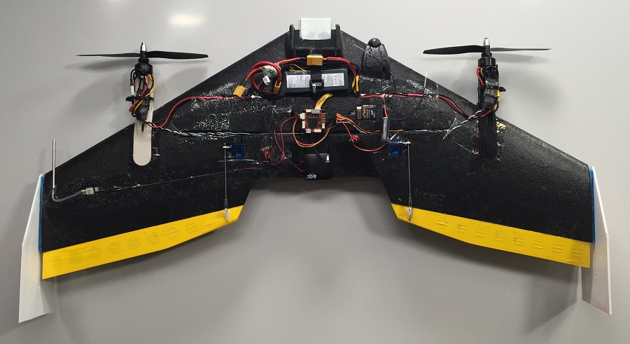

TBS Caipiroshka
The Caipiroshka VTOL is a slightly modified TBS Caipirinha.
Parts List
- TBS Caipirinha Wing (Eflight store)
- Left and right 3D-printed motor mount (design files)
- CW 8045 propeller (Eflight store)
- CCW 8045 propeller (Eflight store)
- 2x 1800 kV 120-180W motors
- 2x 20-30S ESC
- BEC (3A, 5-5.3V) (only needed if you are using ESCs which cannot act as a 5V power supply for the output rail)
- 3S 2200 mA LiPo battery
- Team Orion 3S 11.1V 50 C (Hobbyshop store)
- Pixracer autopilot board + power module
- Digital airspeed sensor
Assembly
The picture below shows an example of how a fully assembled Caipiroshka could look like.

In the following some general tips on how to build the vehicle will be given.
Autopilot
Mount the autopilot in the middle close to the CG of the airframe.
Motor mounts
Print the motor mount (2 times) of which the link to the STL file was specified in the part list. Attach one motor mount on each wing side such that the motor axis will be roughly going through the center of the elevons (see picture). In the upper picture the horizontal distance between the two motor mounts is 56cm. Once you have marked the correct position on the wing you can cover the area which will be in contact with the mount with standard transparent tape on both the upper and lower wing side. Then apply a layer of hot glue onto this area and glue the motor mount onto the wing. The reason for having tape in between the wing surface and the hot glue is that you can very easily remove the motor mount by ripping of the tape from the wing without any damage. This is useful when trying to replace a damaged motor mount.
Motor controllers
The motor controllers can be directly mounted on a flat surface of the motor mounts using glue or a cable binder. You will have to route the power cables to the battery bay. You can use an old soldering iron to melt channels into the foam. Connect the power cables of both motor controllers in the battery bay and solder a plug to the end. This will enable you to connect both the motor controllers to the power module. If you don't have motor controllers which can provide 5V for the output rail of the autopilot then you will have to use an external power supply (BEC).
GPS
The GPS can be mounted in the middle at the very back of the airframe. This helps shifting the weight of the plane to the back since the two motors, a camera and a potentially bigger battery can make it quite nose heavy. Also the large distance to the 12V power cables is beneficial for reducing magnetic interference of the external magnetometer.
Airspeed sensor
Attach the pitot tube close to the outside edge of one of the wing sides. Make sure that the pitot is not affected by the airflow of the propeller. You should be fine if the horizontal distance from the tube to the axis of the motors is larger than the radius of the propeller. Use e.g. an old soldering iron to create a recess for the pitot tube, the tubing and the actual sensor (see picture). Create a channel for routing the cable across the wing to the other components.
Sensor connection to the I2C bus
Both the airspeed sensor and the external magnetometer (located in the gps housing) need to be connected to the I2C bus of the autopilot. Therefore, you will have to use an I2C splitter like the one indicated in the part list. Connect the splitter board with the I2C bus of the autopilot. Then connect both the external magnetometer and the airspeed sensor to the splitter board with a standard I2C cable. In the upper picture the splitter board is located on the left side of the GPS unit.
Elevons
The elevons can be attached to the back side of the wing using transparent tape. You can follow the instructions provided by Team Blacksheep in the build manual for the TBS Caiprinha airframe.
General assembly rules
Before mounting all the components to the wing, use tape to hold them in the approximate position and check if the CG of the wing is in the recommended range specified in the build manual for the TBS Caipirinha. Depending on the additional components you want to have onboard (e.g. GoPro in front or bigger battery) you will need to shift the location of components.
Airframe configuration
Switch to the configuration section in QGroundControl and select the airframe tab. Scroll down the list to find the VTOL Duo Tailsitter icon. Select the Caipiroshka Duo Tailsitter from the drop-down list.

Servo Connections
The descriptions in the table below are referring to the user facing the front of the vehicle when it lies flat on its belly on a table.
| Output | Rate | Actuator |
|---|---|---|
| MAIN1 | 400 Hz | Right (starboard) motor controller |
| MAIN2 | 400 Hz | Left (port) motor controller |
| MAIN3 | 400 Hz | Empty |
| MAIN4 | 400 Hz | Empty |
| MAIN5 | 50 Hz | Right (starboard) aileron servo |
| MAIN6 | 50 Hz | Left (port) aileron servo |